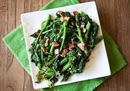

Garlic Broccoli Rabe
This dish is simple and a great addition to any entree you make. The veg pops with garlicky flavor that leaves your mouth wanting more.

Ingredients
- 1.5 teaspoons salt
- 1 bunch broccoli rabe (~1 pound)
- 2 tablespoons extra virgin olive oil
- 1 garlic clove, thinly sliced
- 1 small dried red chile pepper
Directions
- Bring 4 quarts water to a rolling boil in a stockpot
- Cut broccoli into 1 inch pieces
- ADd to the boiling water and boil for 2 minutes, then drain and cool slightly
- Squeeze the moisture out of the leaves
- Heat oil in a large skillet over medium heat
- Add the garlic and red chile pepper
- Add the broccoli rabe and cook, stirring occasionally until tender, ~4 min
- Remove from heat and discard chile
- Season with salt and pepper
My review:Such a tasty treat! Just another yummy way to enjoy broccoli. The garlic really adds the only other flavors you need to make a savory side dish.